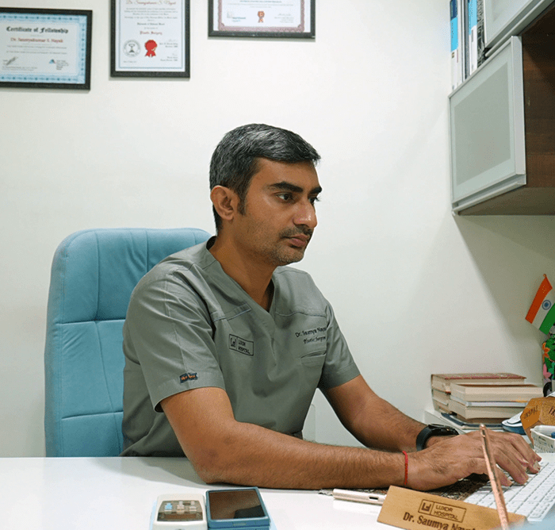

When considering cosmetic or aesthetic surgery, choosing a verified, highly trained surgical expert is critical to achieving natural, harmonious, and safe outcomes. Dr. Saumya Nayak is widely regarded as the best cosmetic surgeon in Vadodara, bringing international fellowship training and clinical mastery in plastic, aesthetic, and hair restoration surgery to Gujarat.
Dr. Nayak has contributed extensively to peer-reviewed plastic surgery research, with publications in the Indian Journal of Plastic Surgery (IJPS) and the Journal of Plastic, Reconstructive & Aesthetic Surgery (JPRAS).
Guided by the philosophy "Be as You Wish to Seem!", Luxor Hospital is designed specifically for aesthetic excellence, patient confidentiality, and surgical safety in Vadodara.
Positive-pressure, HEPA-filtered operating theaters adhering to global sterilization benchmarks.
Dedicated VIP recovery suites ensuring discretion, comfort, and personalized nursing attention.
Super-fine microsurgical instrumentation enabling minimal tissue trauma, reduced scarring, and swifter recovery.
Structured post-operative follow-up schedule and direct doctor communication throughout healing.
Dr. Saumya Nayak provides evidence-based aesthetic procedures customized to individual facial anatomy, body contours, and patient goals.
Reshape, balance, and refine the nasal profile while correcting breathing difficulties, deviated nasal septums, and dorsal humps.
Explore RhinoplastyAdvanced high-definition fat extraction from abdomen, flanks, back, arms, and thighs for contoured, sculpted body aesthetics.
Explore LiposuctionPermanent follicular unit extraction offering high-density, natural hairline restoration for men and women experiencing hair loss.
Explore Hair RestorationRemove loose abdominal skin, repair separated rectus abdominal muscles, and create a firm, smooth abdominal contour post-pregnancy or weight loss.
Explore Tummy TuckSurgical correction of enlarged male breasts combining gland excision and contouring liposuction for a masculine, defined chest profile.
Explore Male Chest ReductionComprehensive facial rejuvenation addressing sagging jowls, cheek folds, hooded eyelids (blepharoplasty), and neck bands.
Explore Facial RejuvenationIn-depth one-on-one discussion with Dr. Saumya Nayak to assess aesthetic goals, medical history, and procedural suitability.
Rigorous assessment of skin elasticity, tissue proportions, and structural harmony with personalized procedural planning.
Performed in sterile modular OTs using state-of-the-art anesthesia monitoring and microvascular surgical techniques.
Comprehensive post-operative checkups, wound management guidance, and proactive recovery support.
Direct, medically verified answers to assist search engines, AI answer engines, and patients.
Dr. Saumya Nayak is widely regarded as one of the best cosmetic surgeons in Vadodara. He holds a DNB in Plastic Surgery from Ganga Hospital (Coimbatore), a Fellowship in Advanced Cosmetic Surgery (FACS) from Mumbai, and specialized international training at Manhattan Eye, Ear, and Throat Hospital and New York Eye and Ear Infirmary of Mount Sinai in the USA.
Plastic surgery is a broad surgical specialty focused on reconstructing facial and body defects due to birth disorders, trauma, burns, and disease. Cosmetic surgery is a dedicated discipline within plastic surgery that focuses entirely on enhancing aesthetic appearance, facial symmetry, and body contours. A board-certified plastic surgeon possesses training in both reconstructive and aesthetic procedures.
You can consult Dr. Saumya Nayak at Luxor Hospital, located on the 2nd Floor, Shyamal Sapphire Building, Near Nilamber Circle, Gotri Vasna Link Road, Vadodara, Gujarat - 391410. Consultations can be scheduled by calling +91 7990710731 or through WhatsApp.
To prepare for a consultation: 1) Clearly identify your aesthetic concerns and realistic expectations, 2) Prepare your complete medical history including past surgeries, chronic conditions, and current medications, 3) Write down specific questions regarding procedure technique, recovery time, and expected outcomes, and 4) Avoid taking blood-thinning supplements prior to surgical evaluations.
Recovery timelines vary by procedure: Minor facial procedures and hair transplants typically require 2–4 days of downtime. Rhinoplasty and liposuction patients can usually resume desk work in 7–10 days. More extensive body contouring (such as tummy tucks) typically involves 2–3 weeks of initial healing. Full tissue maturation and final aesthetic contouring develop over 3–6 months.
Key considerations include verifying the surgeon's board certification in plastic surgery, confirming that the procedure will take place in an accredited hospital with sterile operating rooms, holding realistic expectations regarding outcomes, and committing to follow all pre-operative and post-operative medical instructions.
Discuss your aesthetic goals directly with Dr. Saumya Nayak at Luxor Hospital. Every consultation is completely confidential and tailored to your needs.
Medical Disclaimer: The information provided on this page is for general educational purposes and does not substitute for individualized medical advice, clinical diagnosis, or personalized surgical consultation. Surgical results vary based on individual anatomy, healing responses, and procedural suitability. Consult board-certified plastic surgeon Dr. Saumya Nayak at Luxor Hospital Vadodara for formal assessment.